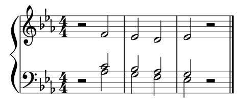
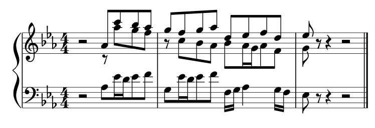

Tonal composition with slippery chicken
+ Associated example files
slippery chicken was not explicitly designed to produce tonal music. However, with a bit of planning and some careful programming, the software can be used to algorithmically generate tonal compositions as well.
The approach used in this demo composition defines 17 fixed,
polyphonic fragments that can be transposed, interchanged, and
interconnected in a kind of modular composition technique. These
modules are then assembled algorithmically using a repeatable
pseudo-random function together with
the get-linear-sequence method of
the l-for-lookup class.
+ The modules: 3- and 4-voiced improvisation patterns
The modules that serve as the building blocks for this piece are based on an approach to classical keyboard improvisation and voice-oriented (rather than harmony-based) musical analysis taught to by Volkhardt Preuss at the Hochschule für Musik und Theater in Hamburg, Germany.
This method collects fundamental musical structures into five basic categories: Fauxbourdon (parallel triads in first inversion, often with 7-6 suspensions), Ruggiero (Dominant-Tonic cadences), Sekundakkord (Dominant-seventh chords with the 7 in the bass), Orgelpunkt (pedal-point sequences over a sustained bass), and Terzfall (falling third sequences). The first four of these have been implemented in this piece.
In this categorical approach, the five pattern types are first reduced and presented as core sequences, in which all of the voices progress in simultaneous half-note motion. This half-note basis can then be extended and elaborated (possibly over several measures) to create more fluid music. The demo composition in this tutorial sticks to just the short, core progressions with half-note motion.
|  |
|  |
+ sc's pitch-selection algorithm and voice-leading
slippery chicken's automatic pitch-selection algorithm was designed to produce atonal music, and it needs the use of some creative constraints to get it to produce tonal melodies with traditional voice-leading.
Because slippery chicken uses the same pitch set for all
players in any given sequence, the approach taken here is to confine
each set to different subsets for each player in each sequence using
the set-limits-high and set-limits-low
slots, thereby enabling an exact mapping of the numbers in
each pitch-seq to specific pitches of the current
set.
The code for this composition applies this technique once for
each rthm-seq, and then transposes the pitch sets using
the transposition slot of the set-palette
object, thereby ensuring that the same scale degrees are selected for
the pitches of each rthm-seq when
that rthm-seq is repeated in conjunction with different
sets.
+ Converting note-names to pitch-seq numbers
A small function has been written for this piece that makes it
easier to determine the numbers required for the
tonal pitch-seqs. It takes as its two arguments a list
of note-name symbols that are to be converted
into pitch-seq numbers, and the "source" list of
note-name symbols to which the pitch-seq numbers are to
be applied.
This function allows the user to enter note-name symbols directly,
which are then automatically converted into pitch-seq
numbers, rather than counting through all the pitches in the set or
subset to determine which numbers are needed in order to produce
them. The function requires that
the :avoid-melodic-octaves
and :avoid-used-notes arguments of
the make-slippery-chicken function are both set
to NIL in order to work properly.
Every pitch in the first list must be present in the "source" list
(second argument) to prevent errors. Enharmonically equivalent
pitches are not considered equal; the note-name symbols must be exact
(i.e. GS4 must be written as GS4 and
not AF4). The function then determines the
resulting pitch-seq numbers by returning
the position (index number) of each specified pitch in the
source set and subtracting the required offset so that the lowest
pitch is always 1.
(defun pitches-to-pseq (pitch-list set)
(let* (positions lowest pseq)
(setf positions (mapcar #'(lambda (x) (position x set)) pitch-list))
(setf lowest (1- (first (sort (copy-list positions) #'<))))
(setf pseq (mapcar #'(lambda (x) (- x lowest)) positions))
pseq))
SC> (pitches-to-pseq '(c4 e4 g4 f4 d4 e4 c4) '(a3 b3 c4 d4 e4 f4 g4 a4)) (1 3 5 4 2 3 1)
+ Generating the set-palette with :transposition
Core sets
The code for this piece uses two primary sets: one that is
predominantly major, with chromatic passing pitches, and one that is
predominantly minor, also with chromatic passing pitches. These are
defined at the top of the variable declarations within
the let* enclosure. Since
the pitches-to-pseq function requires exact note-name
symbols, the sets contain both enharmonic spellings of some of the
pitches, such as fs4 and gf4.
(core-set-maj '(g2 a2 bf2 b2 c3 d3 ef3 e3 f3 g3 a3 b3 c4 cs4 d4 ef4 e4
f4 fs4 gf4 g4 gs4 af4 a4 bf4 b4 c5 d5 e5 f5 fs5 g5 b5
c6))
(core-set-min '(g2 af2 bf2 c3 ef3 f3 fs3 g3 af3 bf3 b3 c4 d4 ef4 e4 f4
fs4 gf4 g4 af4 a4 bf4 b4 c5 ef5 e5 f5))
Using a loop to create the set-palette
The following loop is used to create the set-palette
and assign it to the variable sp:
(sp
(loop for i from 0 to 11
if (= i 0)
collect (list "0-MAJ" (list core-set-maj))
and collect (list "0-MIN" (list core-set-min))
else
collect (list (format nil "~a-MAJ" i)
(list "0-MAJ" ':transposition i))
and collect (list (format nil "~a-MIN" i)
(list "0-MIN" ':transposition i))))
The :transposition slot
The set-palette is assembled automatically in the loop
by collecting 12 transpositions (from 0
to 11 semitones) of each of the core-set-
variables declared above. The integer value passed to
the :transposition slot of a set within
a set-palette object will automatically transpose the
source set by that many semitones.
Assembling the set-palette in this way means there will
be one major and one minor set for each of the 12 chromatic
pitch-classes (0 = C, 1 =
C-sharp, 2 = D, etc.). Modulating to a different key
within the piece, then, is made possible by selecting the
corresponding set in the set-map.
Using strings as IDs
The IDs for the individual sets of this set-palette are
strings, such as "0-MAJ" or "0-MIN", rather
than the numbers or symbols used in the other tutorials. This allows
for easier concatenation of numbers and symbols when automatically
assembling the set-palette within the loop
macro.
The same number used for the semitone transposition is combined with
either "-MAJ" or "-MIN" to create the ID
for the given set.
The resulting set-palette would thus look like this,
if written out in full:
(("0-MAJ"
((G2 A2 BF2 B2 C3 D3 EF3 E3 F3 G3 A3 B3 C4 CS4 D4 EF4 E4 F4 FS4 GF4 G4
GS4 AF4 A4 BF4 B4 C5 D5 E5 F5 FS5 G5 B5 C6)))
("0-MIN"
((G2 AF2 BF2 C3 EF3 F3 FS3 G3 AF3 BF3 B3 C4 D4 EF4 E4 F4 FS4 GF4 G4 AF4
A4 BF4 B4 C5 EF5 E5 F5)))
("1-MAJ" ("0-MAJ" :TRANSPOSITION 1))
("1-MIN" ("0-MIN" :TRANSPOSITION 1))
("2-MAJ" ("0-MAJ" :TRANSPOSITION 2))
("2-MIN" ("0-MIN" :TRANSPOSITION 2))
("3-MAJ" ("0-MAJ" :TRANSPOSITION 3))
("3-MIN" ("0-MIN" :TRANSPOSITION 3))
("4-MAJ" ("0-MAJ" :TRANSPOSITION 4))
("4-MIN" ("0-MIN" :TRANSPOSITION 4))
("5-MAJ" ("0-MAJ" :TRANSPOSITION 5))
("5-MIN" ("0-MIN" :TRANSPOSITION 5))
("6-MAJ" ("0-MAJ" :TRANSPOSITION 6))
("6-MIN" ("0-MIN" :TRANSPOSITION 6))
("7-MAJ" ("0-MAJ" :TRANSPOSITION 7))
("7-MIN" ("0-MIN" :TRANSPOSITION 7))
("8-MAJ" ("0-MAJ" :TRANSPOSITION 8))
("8-MIN" ("0-MIN" :TRANSPOSITION 8))
("9-MAJ" ("0-MAJ" :TRANSPOSITION 9))
("9-MIN" ("0-MIN" :TRANSPOSITION 9))
("10-MAJ" ("0-MAJ" :TRANSPOSITION 10))
("10-MIN" ("0-MIN" :TRANSPOSITION 10))
("11-MAJ" ("0-MAJ" :TRANSPOSITION 11))
("11-MIN" ("0-MIN" :TRANSPOSITION 11)))
+ Using the l-for-lookup class for harmonic progressions
The l-for-lookup class has a method called
get-linear-sequence which lends itself to the generation
of harmonic progressions. Instead of using the rules of a
standard l-for-lookup (Lindenmayer System) object to
create its resulting list by substitution (or rewriting), it uses
them in rotation.
Each time a particular rule-data pair is accessed, the method selects the next item in the data list associated with the given rule. When it has used the last item in a data list, it cycles around and begins at the top of the list the next time that rule-data pair is accessed.
The l-for-lookup object and call
to get-linear-sequence in this simple example here
illustrate this method:
(let ((lfl (make-l-for-lookup 'lfl
nil
'((1 (2 3))
(2 (1))
(3 (1 2))))))
(get-linear-sequence lfl 1 30))
=> (1 2 1 3 1 2 1 3 2 1 2 1 3 1 2 1 3 2 1 2 1 3 1 2 1 3 2 1 2 1)
The data slot of the l-for-lookup object
can be set to NIL when used
with get-linear-sequence, since this method does not use
that slot. The call to get-linear-sequence states the
name of the object to access, the first ID to use as a look-up key
(a.k.a. the "seed" or "axiom"; 1 in this example), and
the length of the list to return (30 here).
The method then gets the first item in the rules list associated with
the seed argument, which in this example is 2, and uses
that item as the look-up ID to get the next item. The only item in
the list associated with rule 2 in this example
is 1. The number 1 is then used again here
as the look-up ID, but this time it gets the next item from the
associated data list: 3. Now that all items associated
with rule 1 have been used, the next time 1
is used as a look-up ID, it will select the first item of the list
again, namely 2, and so on.
The procedure for this piece
The procedure used to generate the sequence of modules in this piece
(i.e. the rthm-seq-map) function similarly. Instead of
using numbers, however, the keys consist of symbols that identify the
different module types, and the associated data consist of symbols
that identify the module types to which each given module type may
progress. The key-data items of this initial object, and the
resulting list, are used later as keys again to look up data from two
further association lists, namely transposition-rules-al
and combos-al.
The symbol names for each of the module types here are created from
their kind, their variation, and their modality (major, minor,
starting major but ending minor, etc.). They each
represent groups of modules, as defined in
the combos-al variable below. Each group may have one or
more possible combination of voices (e.g., the cantizans may
appear in the soprano voice in one combination, but in the alto voice
in another, etc.)
(seq-rules
(make-l-for-lookup 'seq-rules
nil
'((fauxbourdon-a-maj
(ruggiero-a-maj ruggiero-b-maj
ruggiero-b-maj-to-min ruggiero-c-maj))
(fauxbourdon-a-min
(ruggiero-a-min ruggiero-d-min-to-maj))
(ruggiero-a-maj
(fauxbourdon-a-maj sekund-a-maj ped-a-maj))
(ruggiero-a-min
(fauxbourdon-a-min sekund-a-min))
(ruggiero-b-maj
(fauxbourdon-a-maj sekund-a-maj ped-a-maj))
(ruggiero-b-maj-to-min
(fauxbourdon-a-min sekund-a-min))
(ruggiero-c-maj
(fauxbourdon-a-maj sekund-a-maj ped-a-maj))
(ruggiero-d-min-to-maj
(fauxbourdon-a-maj sekund-a-maj ped-a-maj))
(ruggiero-e-maj
(fauxbourdon-a-maj sekund-a-maj ped-a-maj))
(sekund-a-maj
(ruggiero-e-maj))
(sekund-a-min
(ruggiero-a-min ruggiero-d-min-to-maj))
(ped-a-maj
(sekund-a-maj)))))
Getting the linear sequence
The sequence of modules is then created by calling
the get-linear-sequence method with the
symbol fauxbourdon-a-maj as the seed, and a list length
of num-seqs, which is the first variable declared in
this let* enclosure (29 here). The
resulting list is stored in the variable seq-seq.
(seq-seq (get-linear-sequence seq-rules 'fauxbourdon-a-maj num-seqs))
The resulting sequence of modules in this instance is:
(FAUXBOURDON-A-MAJ RUGGIERO-A-MAJ FAUXBOURDON-A-MAJ RUGGIERO-B-MAJ FAUXBOURDON-A-MAJ RUGGIERO-B-MAJ-TO-MIN FAUXBOURDON-A-MIN RUGGIERO-A-MIN FAUXBOURDON-A-MIN RUGGIERO-D-MIN-TO-MAJ FAUXBOURDON-A-MAJ RUGGIERO-C-MAJ FAUXBOURDON-A-MAJ RUGGIERO-A-MAJ SEKUND-A-MAJ RUGGIERO-E-MAJ FAUXBOURDON-A-MAJ RUGGIERO-B-MAJ SEKUND-A-MAJ RUGGIERO-E-MAJ SEKUND-A-MAJ RUGGIERO-E-MAJ PED-A-MAJ SEKUND-A-MAJ RUGGIERO-E-MAJ FAUXBOURDON-A-MAJ RUGGIERO-B-MAJ-TO-MIN SEKUND-A-MIN RUGGIERO-A-MIN)
Adding a coda
This particular sequence, created using a list length
of 29, generates a sequence that ends with a V-I cadence
(a ruggiero module). However, not all list lengths will
generate lists with a ruggiero as their last element; a length
of 30, for example, would generate a sequence that ends
with SEKUND-A-MIN, and the piece would sound like it
gets cut off in the middle of a phrase.
To remedy this, a small loop is used to generate a coda if
necessary. The loop looks at the last item in
the seq-seq list, and if it does not start with the
characters RUG, it collects a new linear sequence of
module symbol names, using the same rules as above, until
a ruggiero is reached. It saves this new short list to the
variable coda, which is then appended to the end of
the seq-seq. The sequence is now complete and will end
with a V-I cadence.
(coda
(loop
with l = (first (last seq-seq))
until (equalp (subseq (format nil "~a" l) 0 3)
"RUG")
do
(setf l (first (last (get-linear-sequence seq-rules l 2))))
collect l))
(seq-seq (append seq-seq coda))
+ An assoc-list object to store transposition rules
A number of the modules selected for this
particular slippery-chicken object modulate to different
keys and different modes (major or
minor). The ruggiero-b-maj-to-min module, for example,
starts on the V (Dominant) of a given major key and uses a
musical sequence to modulate to the minor key three
half-steps higher (e.g. from C major to E-flat minor).
Each consecutive set chosen for the set-map is
therefore dependent on whether the previous module modulates or
not. Accordingly, then, a list of transposition rules are first
collected into an association list (an assoc-list
object), and each of the symbol names defined for each module in
the l-for-lookup object above are once again used as
keys to store lists of two items: a positive or negative integer to
determine the number of half-steps by which the piece is to modulate
at the end of each module, and a symbol to indicate whether the new
key is to be major or minor. This assoc-list object is
stored in the variable transposition-rules-al.
(transposition-rules-al
(make-assoc-list 'transposition-rules
'((fauxbourdon-a-maj (0 maj))
(fauxbourdon-a-min (0 min))
(ruggiero-a-maj (0 maj))
(ruggiero-a-min (0 min))
(ruggiero-b-maj (3 maj))
(ruggiero-b-maj-to-min (3 min))
(ruggiero-c-maj (-3 maj))
(ruggiero-d-min-to-maj (0 maj))
(ruggiero-e-maj (0 maj))
(sekund-a-maj (0 maj))
(sekund-a-min (0 min))
(ped-a-maj (0 maj)))))
A small loop is then used to collect the key-change progression by
calculating the transpositions associated with each of the modules
listed in the seq-seq variable created above. To this
end, each item in the seq-seq is consecutively used as
the key to perform a look-up into
the transposition-rules-al association list.
(transpositions-changes
(let ((n 0)
rule)
(loop for seq in (subseq seq-seq 0 (1- (length seq-seq)))
do (setf rule (get-data-data seq transposition-rules-al))
collect (list
(setf n (mod (+ n (first rule)) 12))
(second rule)))))
The resulting list, which is stored in the
variable transpositions-changes, consists of a series of
two-item lists, each of which contain the number and symbol
(MAJ or MIN) required to create the string
ID of one of the sets in the set-palette. The loop
therefore performs a cumulative summation of the corresponding
transposition integers from the transposition-rules-al
in modulo 12 to ensure that the transposition always returns
a number between 0 and 11, the first part
of an existing set ID. The results for this particular piece (with 29
initial sequences) is:
((0 MAJ) (0 MAJ) (0 MAJ) (0 MAJ) (3 MAJ) (3 MAJ) (6 MIN) (6 MIN) (6 MIN) (6 MIN) (6 MAJ) (6 MAJ) (3 MAJ) (3 MAJ) (3 MAJ) (3 MAJ) (3 MAJ) (3 MAJ) (6 MAJ) (6 MAJ) (6 MAJ) (6 MAJ) (6 MAJ) (6 MAJ) (6 MAJ) (6 MAJ) (6 MAJ) (9 MIN) (9 MIN))
However, this list is just a list of the key changes that occur at
the end of each module. In order to have one key
for each module, the next
variable, transpositions, pushes (0 MAJ) to
the head of this list. There is now one key and one mode stored for
each item in the seq-seq
(transpositions (push '(0 MAJ) transpositions-changes))
+ Assembling the set-map from the transpositions list
The set-map is then created from
the transpositions variable. A small loop collects a
list of strings constructed by concatenating the integer from each
two-item list with the corresponding symbol.
(sm
(loop for trnsp in transpositions
collect (format nil "~a-~a" (first trnsp) (second trnsp))))
Each of these strings will be equal to the ID of one of the
transposed sets in the set-palette. The resulting list
is stored in the variable sm, which is passed directly
to the set-map slot of the slippery-chicken
object made below. The set-map for this particular
sequence of 29 modules looks like this:
("0-MAJ" "0-MAJ" "0-MAJ" "0-MAJ" "3-MAJ" "3-MAJ" "6-MIN" "6-MIN" "6-MIN"
"6-MIN" "6-MAJ" "6-MAJ" "3-MAJ" "3-MAJ" "3-MAJ" "3-MAJ" "3-MAJ" "3-MAJ"
"6-MAJ" "6-MAJ" "6-MAJ" "6-MAJ" "6-MAJ" "6-MAJ" "6-MAJ" "6-MAJ" "6-MAJ"
"9-MIN" "9-MIN")
+ An assoc-list object to store module combinations
As mentioned above, each module type named in
the l-for-lookup object and the
subsequent seq-seq variable represents a group of
possible voice combinations that have the same pitch, rhythm, and
harmonic structure. These combinations are defined in
another assoc-list object here and assigned to the
variable combos-al:
(combos-al
(make-assoc-list
'combos
'((fauxbourdon-a-maj ((fx-1-maj-c fx-1-maj-a fx-1-maj-t 2-rest)
(fx-1-maj-c fx-1-maj-a 2-rest fx-2-maj-t)
(fx-3-maj-c fx-1-maj-c 2-rest fx-2-maj-t)))
(fauxbourdon-a-min ((fx-1-min-c fx-1-min-a fx-1-min-t 2-rest)
(fx-1-min-c fx-1-min-a 2-rest fx-2-min-t)))
(ruggiero-a-maj ((rg-1-maj-c rg-1-maj-a rg-1-maj-t 2-rest)))
(ruggiero-a-min ((rg-1-min-c rg-1-min-a rg-1-min-t 2-rest)
(rg-4-min-c rg-4-min-a 2-rest rg-4-min-b)))
(ruggiero-b-maj ((rg-2-maj-c rg-2-maj-a 5-rest rg-2-maj-t)))
(ruggiero-b-maj-to-min ((rg-2-min-c rg-2-min-a 5-rest rg-2-min-t)))
(ruggiero-c-maj ((rg-3-maj-c rg-3-maj-a rg-3-maj-t rg-3-maj-b)))
(ruggiero-d-min-to-maj ((rg-5-min-c rg-5-min-a rg-5-min-t
rg-5-min-b)))
(ruggiero-e-maj ((rg-6-maj-c rg-6-maj-a 2-rest rg-6-maj-b)))
(sekund-a-maj ((sek-1-maj-c sek-1-maj-a sek-1-maj-t sek-1-maj-b)
(sek-2-maj-c sek-2-maj-a sek-2-maj-t sek-2-maj-b)))
(sekund-a-min ((sek-3-min-c sek-3-min-a sek-3-min-t sek-3-min-b)))
(ped-a-maj ((ped-1-maj-c ped-1-maj-a ped-1-maj-t ped-1-maj-b))))))
Each key in this association list is exactly the same as the keys
in the l-for-lookup object and
the transposition-rules-al. The data lists associated
with each key consist of the IDs of rthm-seq objects
defined in the rthm-seq-palette below.
Each rthm-seq below consists of one voice within one of
the modules. Each data item in the combos-al is
therefore a set of four rthm-seq IDs, one for each
player. These are first collected here in combination to make the
identification easier for the programmer. They will then be
disassembled and reassembled into the rthm-seq-map in
the next two steps below.
+ Assembling the rthm-seq-map from the combos-al
Collecting the random combos first
A small loop is first used to collect the list
of rthm-seq combinations for the
subsequent rthm-seq-map. It passes through the list of
module types stored in the seq-seq variable and uses
each one as a look-up key into the combos-al. It uses
slippery chicken's own random-rep function to
select a random voice combo from the data list associated with each
module type.
(rsm-combos
(let* (c)
(random-rep 1 t) ; reset random state each time for same results
(loop for s in seq-seq
do (setf c (get-data-data s combos-al))
collect
(nth (random-rep (length c)) c))))
The random-rep function has an optional argument that
allows the user to reset the current Lisp's random state, allowing
for the exact same list of randomly selected items to be returned
each time. In this example, random-rep is called first,
prior to the loop, so that the random state is reset. The result of
this loop is stored in the rsm-combos variable and
produces the following list for this example:
Update 19.6.13: The random-rep function has been replaced with a hard-coded list in tonal-algo-example.lsp so that the enharmonic corrections done 'by hand' still function when the file is run in any version of Lisp.
((FX-1-MAJ-C FX-1-MAJ-A FX-1-MAJ-T 2-REST) (RG-1-MAJ-C RG-1-MAJ-A RG-1-MAJ-T 2-REST) (FX-1-MAJ-C FX-1-MAJ-A FX-1-MAJ-T 2-REST) (RG-2-MAJ-C RG-2-MAJ-A 5-REST RG-2-MAJ-T) (FX-1-MAJ-C FX-1-MAJ-A FX-1-MAJ-T 2-REST) (RG-2-MIN-C RG-2-MIN-A 5-REST RG-2-MIN-T) (FX-1-MIN-C FX-1-MIN-A 2-REST FX-2-MIN-T) (RG-4-MIN-C RG-4-MIN-A 2-REST RG-4-MIN-B) (FX-1-MIN-C FX-1-MIN-A 2-REST FX-2-MIN-T) (RG-5-MIN-C RG-5-MIN-A RG-5-MIN-T RG-5-MIN-B) (FX-1-MAJ-C FX-1-MAJ-A FX-1-MAJ-T 2-REST) (RG-3-MAJ-C RG-3-MAJ-A RG-3-MAJ-T RG-3-MAJ-B) (FX-1-MAJ-C FX-1-MAJ-A FX-1-MAJ-T 2-REST) (RG-1-MAJ-C RG-1-MAJ-A RG-1-MAJ-T 2-REST) (SEK-2-MAJ-C SEK-2-MAJ-A SEK-2-MAJ-T SEK-2-MAJ-B) (RG-6-MAJ-C RG-6-MAJ-A 2-REST RG-6-MAJ-B) (FX-3-MAJ-C FX-1-MAJ-C 2-REST FX-2-MAJ-T) (RG-2-MAJ-C RG-2-MAJ-A 5-REST RG-2-MAJ-T) (SEK-2-MAJ-C SEK-2-MAJ-A SEK-2-MAJ-T SEK-2-MAJ-B) (RG-6-MAJ-C RG-6-MAJ-A 2-REST RG-6-MAJ-B) (SEK-1-MAJ-C SEK-1-MAJ-A SEK-1-MAJ-T SEK-1-MAJ-B) (RG-6-MAJ-C RG-6-MAJ-A 2-REST RG-6-MAJ-B) (PED-1-MAJ-C PED-1-MAJ-A PED-1-MAJ-T PED-1-MAJ-B) (SEK-2-MAJ-C SEK-2-MAJ-A SEK-2-MAJ-T SEK-2-MAJ-B) (RG-6-MAJ-C RG-6-MAJ-A 2-REST RG-6-MAJ-B) (FX-1-MAJ-C FX-1-MAJ-A FX-1-MAJ-T 2-REST) (RG-2-MIN-C RG-2-MIN-A 5-REST RG-2-MIN-T) (SEK-3-MIN-C SEK-3-MIN-A SEK-3-MIN-T SEK-3-MIN-B) (RG-1-MIN-C RG-1-MIN-A RG-1-MIN-T 2-REST))
Separating the list of combos into a list for the rthm-seq-map
The next little loop then parses the rsm-combos list
into separate lists for each player, with the syntax necessary to
make a rthm-seq-map object, and stores the resulting
list in the variable rsm. This variable will then be
used directly within the call
to make-slippery-chicken.
(rsm
(loop for p in '(vo vt va vc)
for n from 0
collect
(list p
(flatten
(loop for c in rsm-combos
collect
(list (nth n c)))))))
The result of this loop for this example is as follows:
((VO (FX-1-MAJ-C RG-1-MAJ-C FX-1-MAJ-C RG-2-MAJ-C FX-1-MAJ-C RG-2-MIN-C FX-1-MIN-C RG-4-MIN-C FX-1-MIN-C RG-5-MIN-C FX-1-MAJ-C RG-3-MAJ-C FX-1-MAJ-C RG-1-MAJ-C SEK-2-MAJ-C RG-6-MAJ-C FX-3-MAJ-C RG-2-MAJ-C SEK-2-MAJ-C RG-6-MAJ-C SEK-1-MAJ-C RG-6-MAJ-C PED-1-MAJ-C SEK-2-MAJ-C RG-6-MAJ-C FX-1-MAJ-C RG-2-MIN-C SEK-3-MIN-C RG-1-MIN-C)) (VT (FX-1-MAJ-A RG-1-MAJ-A FX-1-MAJ-A RG-2-MAJ-A FX-1-MAJ-A RG-2-MIN-A FX-1-MIN-A RG-4-MIN-A FX-1-MIN-A RG-5-MIN-A FX-1-MAJ-A RG-3-MAJ-A FX-1-MAJ-A RG-1-MAJ-A SEK-2-MAJ-A RG-6-MAJ-A FX-1-MAJ-C RG-2-MAJ-A SEK-2-MAJ-A RG-6-MAJ-A SEK-1-MAJ-A RG-6-MAJ-A PED-1-MAJ-A SEK-2-MAJ-A RG-6-MAJ-A FX-1-MAJ-A RG-2-MIN-A SEK-3-MIN-A RG-1-MIN-A)) (VA (FX-1-MAJ-T RG-1-MAJ-T FX-1-MAJ-T 5-REST FX-1-MAJ-T 5-REST 2-REST 2-REST 2-REST RG-5-MIN-T FX-1-MAJ-T RG-3-MAJ-T FX-1-MAJ-T RG-1-MAJ-T SEK-2-MAJ-T 2-REST 2-REST 5-REST SEK-2-MAJ-T 2-REST SEK-1-MAJ-T 2-REST PED-1-MAJ-T SEK-2-MAJ-T 2-REST FX-1-MAJ-T 5-REST SEK-3-MIN-T RG-1-MIN-T)) (VC (2-REST 2-REST 2-REST RG-2-MAJ-T 2-REST RG-2-MIN-T FX-2-MIN-T RG-4-MIN-B FX-2-MIN-T RG-5-MIN-B 2-REST RG-3-MAJ-B 2-REST 2-REST SEK-2-MAJ-B RG-6-MAJ-B FX-2-MAJ-T RG-2-MAJ-T SEK-2-MAJ-B RG-6-MAJ-B SEK-1-MAJ-B RG-6-MAJ-B PED-1-MAJ-B SEK-2-MAJ-B RG-6-MAJ-B 2-REST RG-2-MIN-T SEK-3-MIN-B 2-REST)))
+ set-limits for the C-transpositions of the rthm-seqs
The next three variables form the core of this modular approach to
creating tonal music with slippery chicken, and they involve
the set-limits-high and set-limits-low
slots of the slippery-chicken object.
By constraining the current set for each player in every sequence of
the piece and setting the :avoid-melodic-octaves
and :avoid-used-notes keyword arguments of
the make-slippery-chicken function to NIL,
the user can enable an exact mapping of the pitch-seq
numbers of the rthm-seq objects to specific pitches in
the current set.
Defining the pitch limits and storing them in an assoc-list
This demo piece does this by first creating
an assoc-list object that stores the lowest and highest
pitch of each rthm-seq in its C (0) transposition. Each
key in this association list (which is assigned to the
variable lims-al) is identical to the ID of one of
the rthm-seqs defined in
the rthm-seq-palette below.
(lims-al
(make-assoc-list 'set-lims
'((2-rest (a4 a4))
(5-rest (a4 a4))
(fx-1-maj-c (fs4 a4))
(fx-1-maj-a (b3 e4))
(fx-1-maj-t (g3 c4))
(fx-1-min-c (fs4 af4))
(fx-1-min-a (b3 ef4))
(fx-1-min-t (g3 c4))
(fx-2-maj-t (g2 c3))
(fx-2-min-t (g2 c3))
(fx-3-maj-c (b4 e5))
(rg-1-maj-c (b4 c5))
(rg-1-maj-a (c4 g4))
(rg-1-maj-t (c3 g3))
(rg-1-min-c (b4 c5))
(rg-1-min-a (c4 g4))
(rg-1-min-t (c3 g3))
(rg-2-maj-c (ef4 c5))
(rg-2-maj-a (c4 f4))
(rg-2-maj-t (bf2 g3))
(rg-2-min-c (ef4 c5))
(rg-2-min-a (c4 f4))
(rg-2-min-t (bf2 g3))
(rg-3-maj-c (gs4 c5))
(rg-3-maj-a (e4 g4))
(rg-3-maj-t (b3 e4))
(rg-3-maj-b (a2 a3))
(rg-4-min-c (b4 c5))
(rg-4-min-a (c4 g4))
(rg-4-min-b (g2 g3))
(rg-5-min-c (b4 c5))
(rg-5-min-a (e4 g4))
(rg-5-min-t (c4 d4))
(rg-5-min-b (g2 af3))
(rg-6-maj-c (c5 g5))
(rg-6-maj-a (b4 c5))
(rg-6-maj-b (c3 g3))
(sek-1-maj-c (e5 f5))
(sek-1-maj-a (c5 c5))
(sek-1-maj-t (f4 g4))
(sek-1-maj-b (a2 c3))
(sek-2-maj-c (e5 g5))
(sek-2-maj-a (c5 d5))
(sek-2-maj-t (g4 a4))
(sek-2-maj-b (b2 c3))
(sek-3-min-c (ef5 f5))
(sek-3-min-a (c5 c5))
(sek-3-min-t (f4 g4))
(sek-3-min-b (af2 c3))
(ped-1-maj-c (c5 c5))
(ped-1-maj-a (g4 a4))
(ped-1-maj-t (e4 f4))
(ped-1-maj-b (c3 c3)))))
Creating the set-limits- lists
A small loop is then used to collect just the pitches, in MIDI-note
number form, for the set-limits-low
and set-limits-high slots for every sequence and every
player in the piece. It collects them as MIDI-note numbers in order
to facilitate their transposition in the next step.
(lims-lo-hi
(loop for n from 0 to 1
collect
(loop for p in rsm
collect
(loop for rs in (second p)
collect (note-to-midi
(nth n (get-data-data rs lims-al)))))))
The list created consists of two lists, one for the low set limits
and one for the high set limits, each of those lists in turn
containing a list of pitches for each player, with one pitch for each
sequence. This list is assigned to the
variable lims-lo-hi. The result of this list in this
instance with 29 sequences looks like this:
(((66 71 66 63 66 63 66 71 66 71 66 68 66 71 76 72 71 63 76 72 76 72 72 76 72 66 63 75 71) (59 60 59 60 59 60 59 60 59 64 59 64 59 60 72 71 66 60 72 71 72 71 67 72 71 59 60 72 60) (55 48 55 69 55 69 69 69 69 60 55 59 55 48 67 69 69 69 67 69 65 69 64 67 69 55 69 65 48) (69 69 69 46 69 46 43 43 43 43 69 45 69 69 47 48 43 46 47 48 45 48 48 47 48 69 46 44 69)) ((69 72 69 72 69 72 68 72 68 72 69 72 69 72 79 79 76 72 79 79 77 79 72 79 79 69 72 77 72) (64 67 64 65 64 65 63 67 63 67 64 67 64 67 74 72 69 65 74 72 72 72 69 74 72 64 65 72 67) (60 55 60 69 60 69 69 69 69 62 60 64 60 55 69 69 69 69 69 69 67 69 65 69 69 60 69 67 55) (69 69 69 55 69 55 48 55 48 56 69 57 69 69 48 55 48 55 48 55 48 55 48 48 55 69 55 48 69)))
+ Transposing the set-limits- curves
Since some of the modules in this piece result in transpositions, as
addressed above, the set limits too must be transposed in order to
accurately apply to the transposed sets. This is done conveniently
using a small loop, in which the integer from each two-item sublist
of the transpositions variable is accessed and added to
the MIDI-note numbers in the lims-lo-hi list.
(transposed-lims-lo-hi
(loop for hl in lims-lo-hi
collect
(loop for p in hl
for pl in '(vo vt va vc)
collect
(list pl
(loop for n in p
for i in transpositions
for x from 1
collect x
collect (+ n (first i)))))))
This loop also adds the player ID and the sequence number for each
pitch limit to its output, ensuring that the resulting list has two
items at the top level: A properly-formatted list for both
set-limits-low and set-limits-high,
including player IDs and lists of x-y break-point pairs, that can be
passed directly to the set-limits-low
and -high slots from within
the make-slippery-chicken function below.
(((VO
(1 66 2 71 3 66 4 63 5 69 6 66 7 72 8 77 9 72 10 77 11 72 12 74 13 69
14 74 15 79 16 75 17 74 18 66 19 82 20 78 21 82 22 78 23 78 24 82 25
78 26 72 27 69 28 84 29 80))
(VT
(1 59 2 60 3 59 4 60 5 62 6 63 7 65 8 66 9 65 10 70 11 65 12 70 13 62
14 63 15 75 16 74 17 69 18 63 19 78 20 77 21 78 22 77 23 73 24 78 25
77 26 65 27 66 28 81 29 69))
(VA
(1 55 2 48 3 55 4 69 5 58 6 72 7 75 8 75 9 75 10 66 11 61 12 65 13 58
14 51 15 70 16 72 17 72 18 72 19 73 20 75 21 71 22 75 23 70 24 73 25
75 26 61 27 75 28 74 29 57))
(VC
(1 69 2 69 3 69 4 46 5 72 6 49 7 49 8 49 9 49 10 49 11 75 12 51 13 72
14 72 15 50 16 51 17 46 18 49 19 53 20 54 21 51 22 54 23 54 24 53 25
54 26 75 27 52 28 53 29 78)))
((VO
(1 69 2 72 3 69 4 72 5 72 6 75 7 74 8 78 9 74 10 78 11 75 12 78 13 72
14 75 15 82 16 82 17 79 18 75 19 85 20 85 21 83 22 85 23 78 24 85 25
85 26 75 27 78 28 86 29 81))
(VT
(1 64 2 67 3 64 4 65 5 67 6 68 7 69 8 73 9 69 10 73 11 70 12 73 13 67
14 70 15 77 16 75 17 72 18 68 19 80 20 78 21 78 22 78 23 75 24 80 25
78 26 70 27 71 28 81 29 76))
(VA
(1 60 2 55 3 60 4 69 5 63 6 72 7 75 8 75 9 75 10 68 11 66 12 70 13 63
14 58 15 72 16 72 17 72 18 72 19 75 20 75 21 73 22 75 23 71 24 75 25
75 26 66 27 75 28 76 29 64))
(VC
(1 69 2 69 3 69 4 55 5 72 6 58 7 54 8 61 9 54 10 62 11 75 12 63 13 72
14 72 15 51 16 58 17 51 18 58 19 54 20 61 21 54 22 61 23 54 24 54 25
61 26 75 27 61 28 57 29 78))))
+ Variables for repetition in the rthm-seqs
The rhythms used in the rhtm-seq objects to create each
voice of each module are highly repetitive. In order to make the
rather long rthm-seq-palette both more efficient and
more intelligible, a series of variables are created that not only
store the more frequent rhythm combinations but also give them more
recognizable names based on their function. In a few cases, the same
rhythm combinations are given more than one variable name, as they
serve more than one voice-leading function within the tonal modules
that follow.
The time signature (ts) and ten "bare" (i.e., without a
function ascribed to them) rhythms are defined (r-0
to r-9). These are then turned into longer sequences
using Lisp's backquote and at-comma syntax for list splicing.
The terms "cantus", "altus", "tenor", and "bassus" are used to indicate the four voices, and the terms "cantizans", "altizans", "tenorizans", and "bassizans" are used to denote specific voice-leading structures.
;; time signature
(ts '((4 4)))
;; basic rest rhythm
(r-0 '((w)))
;; various multi-bar rest sequences
(2-bars-rest-ts `((,@ts ,@r-0) ,r-0))
(5-bars-rest-ts `((,@ts ,@r-0) ,r-0 ,r-0 ,r-0 ,r-0))
;; first three bare (functionless) rhythm sequences
(r-1 '(q h q))
(r-2 '(+q q h))
(r-3 '(h h))
;; BASIC FAUXBOURDON RHYTHM SEQ
;; assigning functions (as variable names) to bare rhythm sequences
(5-6-sus-7-6 `(,@r-1))
(tie-to-cantizans `(,@r-2))
;; creating variables for fauxbourdon voices
(sus-7-6-to-half-cadence-cntzns-ts `((,@ts ,@5-6-sus-7-6)
,tie-to-cantizans))
(four-halves-to-half-cadence-altzns-tnzns-ts `((,@ts ,@r-3) ,r-3))
;; fourth and fifth bare rhythms
(r-4 '(w))
(r-5 '(- e e - q h))
;; BASIC 2-BAR RUGGIERO RHYTHM SEQ
;; assigning functions (as variable names) to bare rhythm sequences
(cantizans-interruptus `(,@r-1))
(whole `(,@r-4))
;; creating variables for 2-bar ruggiero voices
(2-bar-cadence-cantizans-ts `((,@ts ,@cantizans-interruptus) ,whole))
(2-bar-cadence-tenorizans-ts `((,@ts ,@r-5) ,whole))
(2-bar-cadence-bassizans-ts `((,@ts ,@whole) ,whole))
;; sixth bare rhythm
(r-6 '(q q h))
;; assigning functions (as variable names) to bare rhythm sequences
(tenorizans-interruptus-1 `(,@r-2))
(tenorizans-interruptus-2 `(,@r-6))
;; BASIC 5-BAR FALLING-5THS RUGGIERO SEQUENCE
;; creating variables for 5-bar falling-5ths ruggiero voices
(5-bars-falling-fifths-cntzns-tnzs-ts
`((,@ts ,@cantizans-interruptus) ,tenorizans-interruptus-1
,cantizans-interruptus ,tenorizans-interruptus-1 ,whole))
(5-bars-falling-fifths-tnzs-cntzns-ts
`((,@ts ,@tenorizans-interruptus-2) ,cantizans-interruptus
,tenorizans-interruptus-1 ,cantizans-interruptus ,whole))
(5-bars-falling-fifths-bsszns-ts
`((,@ts ,@whole) ,whole ,whole ,whole ,whole))
;; seventh bare rhythm
(r-7 '(h. q))
;; 3-BAR RUGGIERO IV-I-V-I MODULATION SEQUENCE
;; creating variables for 3-bar ruggiero IV-I-V-I modulation voices
(two-halves `(,@r-3))
;; eighth and ninth bare rhythms
(r-8 '(q q q q))
(r-9 '(q q q. e))
;; NEIGHBOR ELABORATIONS FOR RUGGIERO VOICES
;; creating elaborated upper-/lower-neighbor 2-bar bassizans
(2-bar-upper-lower-neighbor-octave-bassizans-ts `((,@ts ,@r-8) ,whole))
;; creating elaborated lower-neighbor 2-bar altizans and tenorizans
(2-bar-lower-neighbor-altizans-ts `((,@ts ,@r-9) ,whole))
(2-bar-lower-neighbor-tenorizans-ts `((,@ts ,@r-6) ,whole))
;; BASIC 2-BAR SEKUND-AKKORD SEQUENCE
;; creating variable for basic sekund-akkord sequence
(sekund-core `((,@ts ,@r-3) ,whole))
;; BASIC 2-BAR PEDAL-POINT SEQUENCE
;; creating variables for the inner and outer voices of the basic 2-bar
;; pedal-point sequence
(2-bar-pedal-sustained-outer-voices-ts `((,@ts ,@whole) ,whole))
(2-bar-pedal-moving-inner-halves-ts `((,@ts ,@r-3) ,whole))
+ The call to make-slippery-chicken
The call to make-slippery-chicken is then also made
within the let* enclosure, and its resulting object is
stored in the variable tonal-example.
The majority of the keyword arguments within the function are set by
using the variables defined above. Only
the rthm-seq-palette is defined within the function
itself.
(tonal-example
(make-slippery-chicken
'+tonal-example+
:title "tonal example"
:tempo-map '((1 (q 112)))
:ensemble '(((vo (violin :midi-channel 1))
(vt (violin :midi-channel 2))
(va (viola :midi-channel 3))
(vc (cello :midi-channel 4))))
:set-palette sp
:set-map `((1 ,sm))
:set-limits-low (first transposed-lims-lo-hi)
:set-limits-high (second transposed-lims-lo-hi)
:avoid-melodic-octaves nil
:avoid-used-notes nil
[...]
:rthm-seq-map `((1 ,rsm))))
+ The individual voices in the rthm-seq-palette
Each rthm-seq in the rthm-seq-palette
then consists of one voice of one of the tonal 3- and 4-voiced
modules. They are grouped together according to similar types
(fauxbourdon, ruggiero etc.)
How the IDs are created
The IDs of these rthm-seqs are selected based on the
module type, the variation number, the mode, and the voice. In this
case, as above, the top voice is abbreviated "c" for cantus;
and the remaining voices are abbreviated "a", "t", and "b" for
"altus", "tenor", and "bassus". These IDs are used in
the combos-al variable defined above when automatically
generating the rthm-seq-map
Splicing in the variables for longer rhythm patterns
The majority of the rthm-seq objects defined here make
use of the variables declared above for the multi-bar combinations
of repeating rhythm patterns. They are spliced into the definition
of the rthm-seq objects using Lisp's backquote and
comma syntax.
(fx-1-maj-c (,sus-7-6-to-half-cadence-cntzns-ts
Implementing the pitches-to-pseq function
The rthm-seq objects defined in this piece each have
only one pitch-seq in
their pitch-seq-palette. This one pitch-seq
always applies to one of the two core-set- variables,
which are both the C/0 transpositions of the given sets. By
populating the set-palette with exact copies of the
original two sets, which are merely transposed, the interval
structure of each set will always remain the same, and
the pitch-seq numbers will always return the pitch on
the same scale degree in the transposed set.
The pitch-seq numbers are generated automatically
using the pitches-to-pseq function defined
above. Each :pitch-seq-palette is created by splicing
the results of calling that function with specified note-name
symbols (as they would apply to the C/0 transposition of the module)
and the core-set variable to which they apply into
the pitch-seq-palette, again using Lisp's backquote and
comma syntax.
:pitch-seq-palette
(,(pitches-to-pseq '(g4 a4 g4 fs4 g4) core-set-maj))))
The rthm-seq-palette in full:
:rthm-seq-palette
;; The rthm-seqs: "-c" means cantus, "-a" means alto, "-t" means
;; tenor, "-b" means bass.
`((2-rest (,2-bars-rest-ts))
(5-rest (,5-bars-rest-ts))
;; FAUXBOURDON SEQUENCES
;; fauxbourdon 1 major
(fx-1-maj-c (,sus-7-6-to-half-cadence-cntzns-ts
:pitch-seq-palette
(,(pitches-to-pseq '(g4 a4 g4 fs4 g4) core-set-maj))))
(fx-1-maj-a (,four-halves-to-half-cadence-altzns-tnzns-ts
:pitch-seq-palette
(,(pitches-to-pseq '(e4 d4 c4 b3) core-set-maj))))
(fx-1-maj-t (,four-halves-to-half-cadence-altzns-tnzns-ts
:pitch-seq-palette
(,(pitches-to-pseq '(c4 b3 a3 g3) core-set-maj))))
;; fauxbourdon 1 minor
(fx-1-min-c (,sus-7-6-to-half-cadence-cntzns-ts
:pitch-seq-palette
(,(pitches-to-pseq '(g4 af4 g4 fs4 g4) core-set-min))))
(fx-1-min-a (,four-halves-to-half-cadence-altzns-tnzns-ts
:pitch-seq-palette
(,(pitches-to-pseq '(ef4 d4 c4 b3) core-set-min))))
(fx-1-min-t (,four-halves-to-half-cadence-altzns-tnzns-ts
:pitch-seq-palette
(,(pitches-to-pseq '(c4 bf3 af3 g3) core-set-min))))
;; fauxbourdon 2 major
(fx-2-maj-t (,four-halves-to-half-cadence-altzns-tnzns-ts
:pitch-seq-palette
(,(pitches-to-pseq '(c3 b2 a2 g2) core-set-maj))))
;; fauxbourdon 2 minor
(fx-2-min-t (,four-halves-to-half-cadence-altzns-tnzns-ts
:pitch-seq-palette
(,(pitches-to-pseq '(c3 bf2 af2 g2) core-set-min))))
;; fauxbourdon 3 major
(fx-3-maj-c (,four-halves-to-half-cadence-altzns-tnzns-ts
:pitch-seq-palette
(,(pitches-to-pseq '(e5 d5 c5 b4) core-set-maj))))
;; RUGGIERO SEQUENCES
;; ruggiero 1 major
(rg-1-maj-c (,2-bar-cadence-cantizans-ts
:pitch-seq-palette
(,(pitches-to-pseq '(b4 c5 b4 c5) core-set-maj))))
(rg-1-maj-a (,2-bar-cadence-tenorizans-ts
:pitch-seq-palette
(,(pitches-to-pseq '(g4 f4 e4 d4 c4) core-set-maj))))
(rg-1-maj-t (,2-bar-cadence-bassizans-ts
:pitch-seq-palette
(,(pitches-to-pseq '(g3 c3) core-set-maj))))
;; ruggiero 1 minor
(rg-1-min-c (,2-bar-cadence-cantizans-ts
:pitch-seq-palette
(,(pitches-to-pseq '(b4 c5 b4 c5) core-set-min))))
(rg-1-min-a (,2-bar-cadence-tenorizans-ts
:pitch-seq-palette
(,(pitches-to-pseq '(g4 f4 ef4 d4 c4) core-set-min))))
(rg-1-min-t (,2-bar-cadence-bassizans-ts
:pitch-seq-palette
(,(pitches-to-pseq '(g3 c3) core-set-min))))
;; ruggiero 2 major
(rg-2-maj-c (,5-bars-falling-fifths-cntzns-tnzs-ts
:pitch-seq-palette
(,(pitches-to-pseq '(b4 c5 bf4 a4 g4 a4 bf4 af4 g4 f4
ef4) core-set-maj))))
(rg-2-maj-a (,5-bars-falling-fifths-tnzs-cntzns-ts
:pitch-seq-palette
(,(pitches-to-pseq '(f4 e4 d4 e4 f4 ef4 d4 c4 d4 ef4 d4
ef4) core-set-maj))))
(rg-2-maj-t (,5-bars-falling-fifths-bsszns-ts
:pitch-seq-palette
(,(pitches-to-pseq '(g3 c3 f3 bf2 ef3) core-set-maj))))
;; ruggiero 2 minor
(rg-2-min-c (,5-bars-falling-fifths-cntzns-tnzs-ts
:pitch-seq-palette
(,(pitches-to-pseq '(b4 c5 bf4 a4 g4 a4 bf4 af4 gf4 f4
ef4) core-set-maj))))
(rg-2-min-a (,5-bars-falling-fifths-tnzs-cntzns-ts
:pitch-seq-palette
(,(pitches-to-pseq '(f4 e4 d4 e4 f4 ef4 d4 c4 d4 ef4
d4 ef4) core-set-maj))))
(rg-2-min-t (,5-bars-falling-fifths-bsszns-ts
:pitch-seq-palette
(,(pitches-to-pseq '(g3 c3 f3 bf2 ef3) core-set-maj))))
;; ruggiero 3 major
(rg-3-maj-c (((,@ts ,@cantizans-interruptus) ,whole
,tie-to-cantizans)
:pitch-seq-palette
(,(pitches-to-pseq '(b4 c5 bf4 a4 gs4 a4)
core-set-maj))))
(rg-3-maj-a (((,@ts ,@r-6) ,tenorizans-interruptus-1 ,two-halves)
:pitch-seq-palette
(,(pitches-to-pseq '(g4 g4 g4 f4 e4 e4 e4)
core-set-maj))))
(rg-3-maj-t (((,@ts ,@r-6) ,r-7 ,two-halves)
:pitch-seq-palette
(,(pitches-to-pseq '(d4 e4 d4 d4 c4 b3 cs4)
core-set-maj))))
(rg-3-maj-b (((,@ts ,@whole) ,two-halves ,two-halves)
:pitch-seq-palette
(,(pitches-to-pseq '(g3 d3 a3 e3 a2) core-set-maj))))
;; ruggiero 4 minor
(rg-4-min-c (,2-bar-cadence-cantizans-ts
:pitch-seq-palette
(,(pitches-to-pseq '(b4 c5 b4 c5) core-set-min))))
(rg-4-min-a (,2-bar-cadence-tenorizans-ts
:pitch-seq-palette
(,(pitches-to-pseq '(g4 f4 ef4 d4 c4) core-set-min))))
(rg-4-min-b (,2-bar-upper-lower-neighbor-octave-bassizans-ts
:pitch-seq-palette
(,(pitches-to-pseq '(g3 fs3 g3 g2 c3) core-set-min))))
;; ruggiero 5 minor
(rg-5-min-c (,2-bar-cadence-cantizans-ts
:pitch-seq-palette
(,(pitches-to-pseq '(b4 c5 b4 c5) core-set-min))))
(rg-5-min-a (,2-bar-lower-neighbor-altizans-ts
:pitch-seq-palette
(,(pitches-to-pseq '(g4 fs4 g4 f4 e4) core-set-min))))
(rg-5-min-t (,2-bar-lower-neighbor-tenorizans-ts
:pitch-seq-palette
(,(pitches-to-pseq '(d4 c4 d4 c4) core-set-min))))
(rg-5-min-b (,2-bar-upper-lower-neighbor-octave-bassizans-ts
:pitch-seq-palette
(,(pitches-to-pseq '(g3 af3 g3 g2 c3) core-set-min))))
;; ruggiero 6 major
(rg-6-maj-c (,2-bar-cadence-tenorizans-ts
:pitch-seq-palette
(,(pitches-to-pseq '(g5 f5 e5 d5 c5) core-set-maj))))
(rg-6-maj-a (,2-bar-cadence-cantizans-ts
:pitch-seq-palette
(,(pitches-to-pseq '(b4 c5 b4 c5) core-set-maj))))
(rg-6-maj-b (,2-bar-cadence-bassizans-ts
:pitch-seq-palette
(,(pitches-to-pseq '(g3 c3) core-set-maj))))
;; SEKUND SEQUENCES
;; sekund 1 major
(sek-1-maj-c (,sekund-core
:pitch-seq-palette
(,(pitches-to-pseq '(e5 e5 f5) core-set-maj))))
(sek-1-maj-a (,sekund-core
:pitch-seq-palette
(,(pitches-to-pseq '(c5 c5 c5) core-set-maj))))
(sek-1-maj-t (,sekund-core
:pitch-seq-palette
(,(pitches-to-pseq '(g4 g4 f4) core-set-maj))))
(sek-1-maj-b (,sekund-core
:pitch-seq-palette
(,(pitches-to-pseq '(c3 bf2 a2) core-set-maj))))
;; sekund 1 major
(sek-2-maj-c (,sekund-core
:pitch-seq-palette
(,(pitches-to-pseq '(e5 fs5 g5) core-set-maj))))
(sek-2-maj-a (,sekund-core
:pitch-seq-palette
(,(pitches-to-pseq '(c4 d5 d5) core-set-maj))))
(sek-2-maj-t (,sekund-core
:pitch-seq-palette
(,(pitches-to-pseq '(g4 a4 g4) core-set-maj))))
(sek-2-maj-b (,sekund-core
:pitch-seq-palette
(,(pitches-to-pseq '(c3 c3 b2) core-set-maj))))
;; sekund 3 minor
(sek-3-min-c (,sekund-core
:pitch-seq-palette
(,(pitches-to-pseq '(ef5 e5 f5) core-set-min))))
(sek-3-min-a (,sekund-core
:pitch-seq-palette
(,(pitches-to-pseq '(c5 c5 c5) core-set-min))))
(sek-3-min-t (,sekund-core
:pitch-seq-palette
(,(pitches-to-pseq '(g4 g4 f4) core-set-min))))
(sek-3-min-b (,sekund-core
:pitch-seq-palette
(,(pitches-to-pseq '(c3 bf2 af2) core-set-min))))
;; PEDAL SEQUENCES
;; pedal 1 major
(ped-1-maj-c (,2-bar-pedal-sustained-outer-voices-ts
:pitch-seq-palette
(,(pitches-to-pseq '(c5 c5) core-set-maj))))
(ped-1-maj-a (,2-bar-pedal-moving-inner-halves-ts
:pitch-seq-palette
(,(pitches-to-pseq '(g4 a4 g4) core-set-maj))))
(ped-1-maj-t (,2-bar-pedal-moving-inner-halves-ts
:pitch-seq-palette
(,(pitches-to-pseq '(e4 f4 e4) core-set-maj))))
(ped-1-maj-b (,2-bar-pedal-sustained-outer-voices-ts
:pitch-seq-palette
(,(pitches-to-pseq '(c3 c3) core-set-maj)))))
+ Enharmonic spellings that reflect the tonality
By default, slippery chicken will automatically attempt to respell all of the pitches in the resulting score in a manner that makes sense in an atonal setting. The result of that automatic procedure in this example results in a number of pitches needing to be enharmonically flipped, in order to accurately reflect their function within a tonal setting.
There are three options for changing the enharmonic pitches of one
or more notes in a slippery-chicken object:
the respell-notes,
enharmonic,
and
enharmonics
methods. This example uses the latter two methods.
In order for these three methods to be effective, they must be
called as post-generation editing methods prior to the calls to any
of the printable output methods, and therefore require that
the respell-notes option of cmn-display
and write-lp-data-for-all be set
to NIL.
(cmn-display tonal-example :file "/tmp/tonal.eps"
:auto-bar-nums 5
:respell-notes nil
:auto-clefs nil)
(write-lp-data-for-all tonal-example
:respell-notes nil
:auto-clefs nil))
enharmonics
The enharmonics method allows the user to specify
a range of measures in which pitches are to be enharmonically
flipped, as well as a list of note-name symbols that are to be
affected. The code for this piece therefore uses a loop in which the
starting and ending bars, the player, and the list of pitches, are
passed as a for value to the macro, and
a do statement that applies
the enharmonics method with these different values at
each iteration. This method does not allow for the enharmonic
spelling of "white-key" notes (e.g. C as B-sharp etc.)
(loop for d in '((14 16 vo (cs5)) (15 16 vt (fs4)) (19 27 vt (af4))
(25 25 va (af4)) (27 28 vo (cs5)) (27 30 vt (fs4 cs5))
(27 30 va (fs4)) (42 45 vo (cs5)) (43 44 vt (fs4))
(47 59 vo (bf5 af5)) (47 59 vt (ef5 af5))
(47 59 va (bf4 ef5)) (61 65 vo (ef5)) (61 66 vt (bf4 af4))
(70 70 vo (af5)))
do
(enharmonics tonal-example (first d) (second d) (third d)
:pitches (fourth d)))
enharmonic
The enharmonic method always applies to only one
sounding event object at a time. The
optional :force-naturals argument of this method allows
the method to be used to respell "white-key" pitches as enharmonic
equivalents. The method is used here as well within a loop
whose for statement specifies a list of sublists
consisting of the measure number, event number and player ID of the
notes to be altered.
(loop for en in '((17 1 vt) (17 3 vo) (17 3 vt) (20 2 vo) (20 2 vt) (21 1 vo)
(21 3 vo) (21 2 vc) (24 2 vo) (24 2 vt) (25 1 vo) (25 3 vo)
(25 2 vt) (26 1 vt) (27 2 vt) (28 2 va) (29 2 vo) (29 3 vo)
(29 1 vc) (30 2 vt) (45 2 vo) (45 3 vo) (45 1 vt) (45 3 vt)
(47 2 vo) (48 1 vc) (49 1 vt) (49 3 vt) (52 1 vc) (53 1 vt)
(53 3 vt) (57 2 vo) (58 1 vc) (59 1 vt) (59 3 vt) (62 2 vo)
(63 1 vo) (62 2 vt) (61 2 va) (62 1 va))
do (enharmonic (get-event tonal-example (first en) (second en) (third en))
:force-naturals t))
+ Inserting key changes and double-bars
Another small loop is used to insert key changes and double-bar lines into the printable output. It is important to point out here that CMN always prints the accidentals into the score, even if a key signature has been added; whereas, LilyPond will hide accidentals already present in a key signature and automatically add cautionary accidentals where suited.
This little loop takes care of both the key signature and the double-bar placement at the same time.
(loop for b-k in '((12 (ef major)) (19 (fs minor)) (27 (gf major))
(32 (ef major)) (47 (fs major)) (68 (a minor)))
do
(loop for p in '(vo vt va vc)
do
(change-bar-line-type tonal-example (1- (first b-k)) 1)
(add-mark-before
(get-event tonal-example (first b-k) 1 p)
`(key ,@(second b-k)))))
+ Changing staff names for same instruments
The final step undertaken by the code for this piece is to change
the instrument staff names of the two violin parts for the printable
output. By default these will both be identified in the score
as violin. The following little loop uses setf
to change the value of the staff-name
and staff-short-name slots of the corresponding
instrument objects stored in this slippery-chicken
object's ensemble slot to violin 1
and violin 2.
(loop for n in '((vo "violin 1" "vln 1") (vt "violin 2" "vln 2"))
do
(setf (staff-name
(get-data-data (first n) (ensemble tonal-example)))
(second n))
(setf (staff-short-name
(get-data-data (first n) (ensemble tonal-example)))
(third n)))
+ Output
The output for this piece is generated in the same way already
covered in other tutorials. Of note here is the use of
the auto-bar-nums argument to
the cmn-display method, which causes bar numbers to be
placed into the score at intervals of 5 measures, and the setting of
both the respell-notes and auto-clefs
options to NIL in both the cmn-display
and write-lp-data-for-all methods. The former is
necessary in order for the enharmonic changes described above to be
effective. The latter is merely a matter of preference.